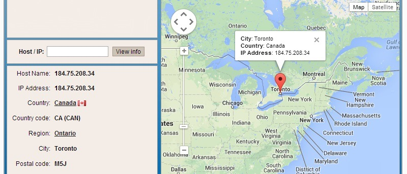

Geo-Locate Internet Protocol (IP) Traffic
Geo-Locate Internet Protocol (IP) Traffic With Python

To begin with, we must how to correlate an Internet Protocol (IP) address to a physical location. To do this, we will rely on a freely available database from MaxMind, Inc. While MaxMind offers several precise commercial products, its open-source GeoLiteCity database available at http://www.maxmind.com/ app/geolitecity …
more…